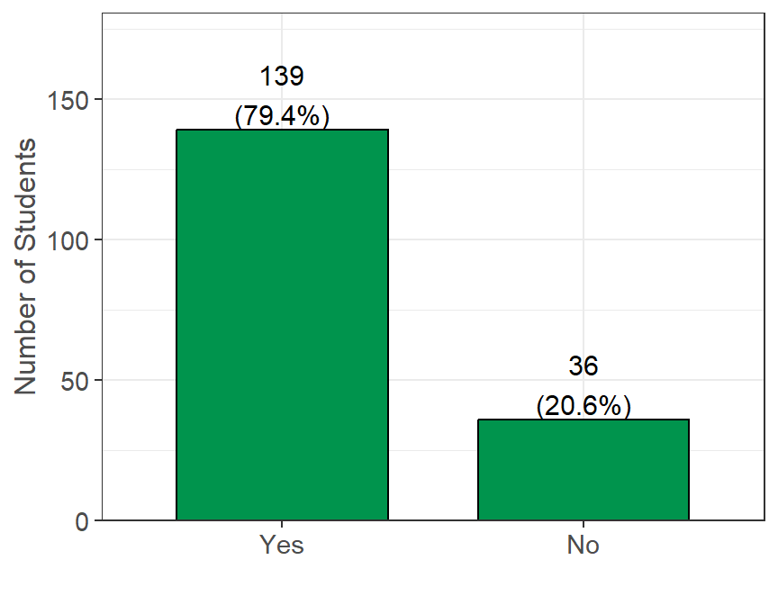
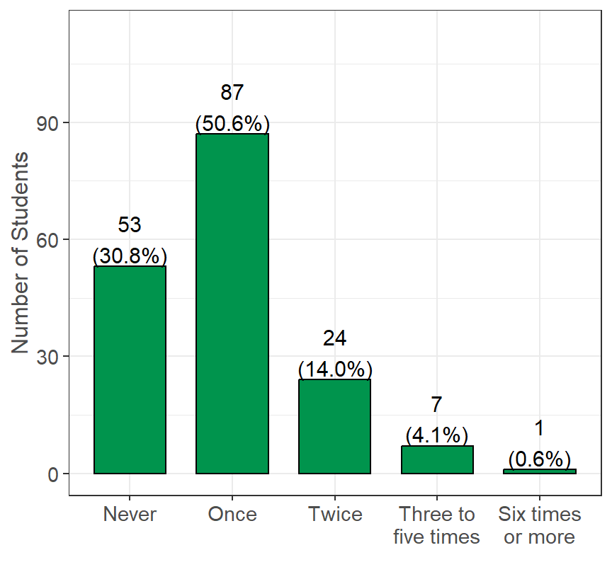
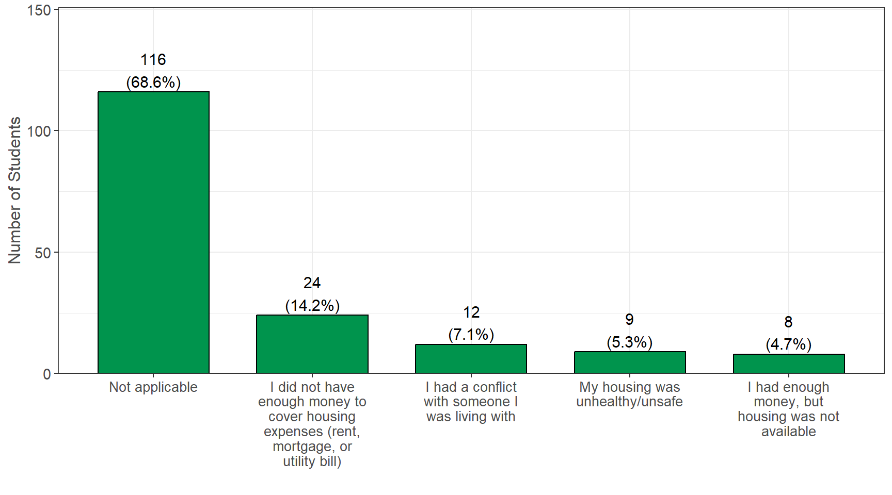
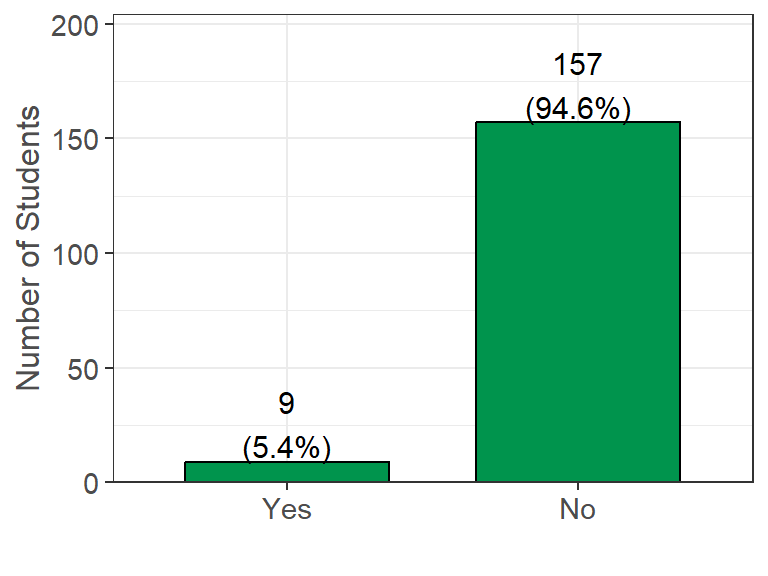

Housing
Students were asked to report information relating to their current and past housing conditions. This includes if they were living near their college, the type of home they were currently living in, any hardships they faced in the past year with housing, homelessness, housing insecurity, barriers to accessing housing, and any housing changes due to COVID-19.
As a reminder, students had the option to select “Prefer not to answer” for all questions, and these responses were set as missing values. In addition, 11 (6.0%) students did not finish the survey. The n reporting refers to the total number of non-missing responses, while the percent reporting reflects the percent of non-missing responses.
Living Near College
Survey Question: Are you currently living in the city/area in which you are enrolled in college?
Summary: A total of 36 (20.6%) students reported NOT currently living in the city/area of their college, while the remaining 139 (79.4%) reported currently living in the city/area of their college. While there were many students who answered “No,” this could be due to many campuses offering remote classes and students choosing to live at home or in an area with a lower cost of living.
Current Housing Status
| Current Housing Status: | Yes (%) |
|---|---|
| I live in university housing or residence halls | 88/176 (50.0%) |
| I rent an apartment or house with roommates | 60/176 (34.1%) |
| I rent an apartment or house without roommates | 14/176 (8.0%) |
| I live with parents or other relatives, not paying rent with my own money | 6/176 (3.4%) |
| I live with parents or other relatives, paying rent with my own money | 4/176 (2.3%) |
| Other (Please specify): | 2/176 (1.1%) |
| I live in a sorority or fraternity house | 1/176 (0.6%) |
| I am currently living at an outdoor location, abandoned building, car, or other area not meant for regular housing without permanent housing | 1/176 (0.6%) |
| I own my own home | 0/176 (0.0%) |
| I live in transitional housing or a halfway home | 0/176 (0.0%) |
| I am temporarily living with friends or relatives without permanent housing (i.e. couch surfing) | 0/176 (0.0%) |
| I am temporarily living in a homeless shelter without permanent housing | 0/176 (0.0%) |
Survey Question: Which best describes your current housing situation?
Summary: A total of 88 (50.0%) students reported living in university housing or residence halls, while 60 (34.1%) students reported renting an apartment with roommates.
In the Past 12 Months…
| In the past 12 months... | Yes (%) |
|---|---|
| Was there a rent or mortgage increase that made it difficult to pay? (n = 162) | 45 (27.8%) |
| Have you lived with others beyond the expected capacity of your house or apartment? (n = 171) | 31 (18.1%) |
| Have you ever been late paying rent or mortgage? (n = 166) | 25 (15.1%) |
| Have you been unable to pay or underpaid a utility bill? (n = 166) | 25 (15.1%) |
| Have you been unable to pay or underpaid your rent or mortgage? (n = 162) | 23 (14.2%) |
| Have you had to stay in a hostile housing environment or abusive relationship because you had no other place to live? (n = 167) | 18 (10.8%) |
| Have you been asked to leave your home by someone you lived with? (n = 171) | 12 (7.0%) |
| Have you been evicted? (n = 173) | 2 (1.2%) |
Survey Question: Survey Questions are indicated in the table.
Additional Notes: These eight questions are used to screen for housing insecurity.
Summary: A total of 45 (27.8%) students reported that there was a rent or mortgage increase that made it difficult to pay rent, while 25 (15.1%) reported that they were either unable to pay or underpaid a utility bill. Additionally, 25 (15.1%) students reported that they have paid their rent/mortgage late.
Sleeping Locations
| Location: | Last 30 days | In the past 12 months | Not Applicable |
|---|---|---|---|
| Campus or University Housing (n = 171) | 65 (38.0%) | | 50 (29.2%) | | 78 (45.6%) |
| In a rented or owned house, mobile home, or apartment with my family (parent, guardian, relative or caretaker) (n = 169) | 65 (38.5%) | | 64 (37.9%) | | 66 (39.1%) |
| In a rented or owned house, mobile home, or apartment (alone or with roommates or friends) (n = 169) | 52 (30.8%) | | 47 (27.8%) | | 88 (52.1%) |
| Temporarily staying with a relative, friend, or couch surfing until I find other housing (n = 167) | 4 (2.4%) | | 13 (7.8%) | | 150 (89.8%) |
| Temporarily at a hotel or motel without a permanent home to return to (not on vacation or business travel) (n = 168) | 2 (1.2%) | | 3 (1.8%) | | 163 (97.0%) |
| Sorority/Fraternity house (n = 170) | 1 (0.6%) | | 4 (2.4%) | | 165 (97.1%) |
| At a shelter (n = 169) | 1 (0.6%) | | 0 (0.0%) | | 168 (99.4%) |
| In a transitional housing or independent living program (n = 168) | 1 (0.6%) | | 0 (0.0%) | | 167 (99.4%) |
| Outdoor location such as street, sidewalk, alley, park, etc. (n = 170) | 1 (0.6%) | | 0 (0.0%) | | 169 (99.4%) |
| In a car, truck, van, RV, or camper (n = 170) | 1 (0.6%) | | 4 (2.4%) | | 165 (97.1%) |
| In a closed area/space with a roof not meant for human habitation such as an abandoned building, garage, tent, etc. (n = 170) | 1 (0.6%) | | 0 (0.0%) | | 169 (99.4%) |
| At a group home such as halfway house or residential program for mental health or substance abuse (n = 169) | 0 (0.0%) | | 1 (0.6%) | | 168 (99.4%) |
Survey Question: In the last 30 days, or in the past 12 months, have you slept in any of the following places? (Select all that apply)
Additional Notes: The n count next to each question represents the number of students reporting out of 182 students. As a reminder, students had the option to select multiple options for each question.
Summary: In the past 12 months, 64 (37.9%) students reported sleeping in a rented/owned property with family, while 47 (27.8%) reported sleeping in a rented/owned property alone or with roommates. Additionally, in the past 12 months, 13 (7.8%) reported temporarily staying with a relative/friend or couch surfing until they find other housing, while 4 (2.4%) reported sleeping in a car, truck, van, RV, or camper.
Housing Insecurity & Homelessness
| Classification: | Yes (%) |
|---|---|
| Homeless in the past 12 months (n = 169) | 24 (14.2%) |
| Housing Insecure (n = 160) | 19 (11.9%) |
| Homeless in the past 30 days (n = 169) | 8 (4.7%) |
Survey Question: These variables were derived from the questions in the Past 12 Months section and from the Sleeping Locations section.
Additional Notes:
- Housing insecurity was measured using an eight-item scale that included the six items previously used by the Hope Lab1, and two additional questions that were added after consultation with local stakeholders.
- Students who answered “Yes” to 3 or more questions from the In Past 12 Months section were deemed housing insecure.
- Homelessness was determined using 9 indicators of homelessness described by the Researching Basic Needs in Higher Education Report2. The survey questions measure indicators of homelessness in the last 30 days and 12 months based on the definitions of homelessness used by the U.S. Housing and Urban Development (HUD) and the U.S. Department of Education.
- From the Sleeping Locations section, students who reported sleeping in any of the following places in the past 12 months or 30 days were deemed as homeless: “At a shelter,” “Temporarily staying with a relative, friend, or couch surfing until I find other housing,” “Temporarily at a hotel or motel without a permanent home to return to (not on vacation or business travel),” “In a transitional housing or independent living program,” “At a group home such as halfway house or residential program for mental health or substance abuse,” “Outdoor location such as street, sidewalk, alley, park, etc.,” “In a car, truck, van, RV, or camper,” and/or “In a closed area/space with a roof not meant for human habitation such as an abandoned building, garage, tent, etc.”
Summary: A total of 19 (11.9%) students were deemed as housing insecure, while 8 (4.7%) were deemed as homeless within the past month, and 24 (14.2%) were deemed as homeless within the past year of taking the survey.
Housing Barriers
| Housing Barriers: | Yes (%) |
|---|---|
| I have not experienced barriers related to accessing housing (n = 173) | 116 (67.1%) |
| Lack of deposit funds (n = 173) | 27 (15.6%) |
| Lack of employment (n = 173) | 27 (15.6%) |
| Lack of first/last month's rent (n = 173) | 25 (14.5%) |
| Lack of co-signer (n = 173) | 15 (8.7%) |
| Low/lack of credit score (n = 173) | 13 (7.5%) |
| Other (n = 173) | 11 (6.4%) |
| Eviction on record (n = 173) | 0 (0.0%) |
Survey Question: In the past 12 months, what barriers have you experienced in accessing housing? (Select all that apply)
Summary: A total of 116 (67.1%) students reported not experiencing any barriers to accessing housing, while 27 (15.6%) reported having a lack of deposit funds, and 27 (15.6%) reported a lack of employment as a barrier.
Unstable Housing

Survey Question: In the past 12 months, how many times have you moved?
Summary: A total of 53 (30.8%) students reported never moving in the past 12 months, while 87 (50.6%) reported moving once, and 24 (14.0%) reported moving twice. There were 8 (4.7%) students who reported moving three or more times in the past 12 months.

Survey Question: In the past 12 months, how many times have you been unsure of where you were going to sleep at night?
Summary: A total of 138 (81.7%) students reported never being unsure of where they are going to sleep in the past 12 months, while 13 (7.7%) were unsure on one occasion, 8 (4.7%) were unsure on two occasions, and 10 (5.9%) were unsure on three or more occasions.

Survey Question: In the past 12 months, if you have experienced unstable housing, what was the most common reason?
Summary: A total of 116 (68.6%) reported that this question was not applicable, while 24 (14.2%) reported they did not have enough money to cover housing expenses, and 12 (7.1%) reported that they had a conflict with someone they were living with.
COVID-19 Housing Impact

Survey Question: Has your housing stability changed due to COVID-19? (e.g. you are now homeless, you are now sleeping on my friend’s couch, you are unable to access campus housing, etc.).
Summary: A total of 9 (5.4%) students reported that their housing stability changed due to COVID-19, while 157 (94.6%) reported that their housing stability did not change.
| Reason: | Yes (%) |
|---|---|
| I was unable to access on-campus housing (n = 8) | 3 (37.5%) |
| Finances changed due to lost (or reduced) on-campus job (n = 8) | 2 (25.0%) |
| Finances changed due to lost (or reduced) off-campus job (n = 8) | 2 (25.0%) |
| I was unable to access off-campus housing (n = 8) | 2 (25.0%) |
| I was in unsafe housing (n = 8) | 1 (12.5%) |
| Other (n = 8) | 1 (12.5%) |
| My roommate's finances changed (n = 8) | 0 (0.0%) |
Survey Question: If yes, why did your housing stability change due to COVID-19? (Select all that apply)
Additional Notes: This question was shown only to those who answered “Yes” in the COVID-19 Housing Impact section.
Summary: Of those who reported a change in housing stability from the COVID-19 Housing Impact section, 2 (25.0%) students reported that the reason for the change in their housing stability was because their finances changed due to a lost (or reduced) OFF-campus job, while 2 (25.0%) reported their finances changed due to a lost (or reduced) ON-campus job.
Footnotes: